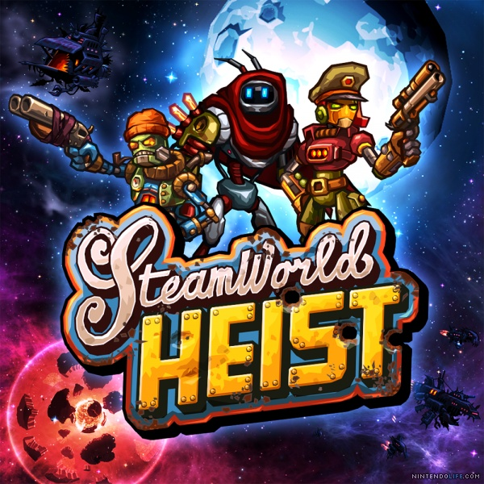

SteamWorld Heist is a turn-based strategy shooter developed by Swedish video game developer Image & Form. The third installment of the SteamWorld series and the sequel to SteamWorld Dig, SteamWorld Heist has the player control Captain Piper Faraday, a smuggler and occasional pirate, as she recruits a ragtag team of robots and sets out on a space adventure. The objective of the game is for players to board, loot, and shoot their way through enemy spaceships.
SteamWorld Heist was released on the Nintendo eShop for the Nintendo 3DS in Europe, the Americas, Australia and New Zealand on December 10, 2015. It was released worldwide for Microsoft Windows, OS X and Linux through Steam on June 7, 2016, for the PlayStation 4 and the PlayStation Vita via the PlayStation Store on June 7, 2016 in North America and on June 8, 2016 in Europe and Australia. It was released both physically and digitally (through the Nintendo eShop) for the Wii U on September 30, 2016 in Europe and Australia and in North America on October 20, 2016. It was released worldwide on the iOS App store on November 9, 2016. On December 28, 2017, the game was released worldwide for the Nintendo Switch (via Nintendo eShop) under the subtitle Ultimate Edition.
The game's official soundtrack, Music From SteamWorld Heist, is composed and recorded by the steampunk band Steam Powered Giraffe. The band members appear as robots in different bars throughout the game while performing songs from the soundtrack.
This album includes the SteamWorld Heist theme song created by the band, as well as 12 tracks, featuring 6 completely original songs written for the game, and 6 classic Steam Powered Giraffe songs, re-recorded to fit into the SteamWorld Heist game universe.
| Minimum: | Recommended: | |
| Processor: | 2GHz | 2 GHz dual-core |
| Memory: | 1024 MB RAM | |
| Graphics: | OpenGL 2.1-compatible, 512 MB video memory, framebuffer object support. E.g. Intel HD 4600 or better. | Geforce GTX 660 / Radeon 7870 or better. |
| Storage: | 320 MB available space | |
| Sound Card: | OpenAL compatible |